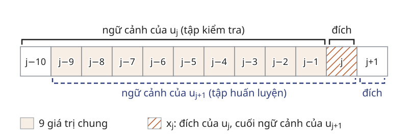
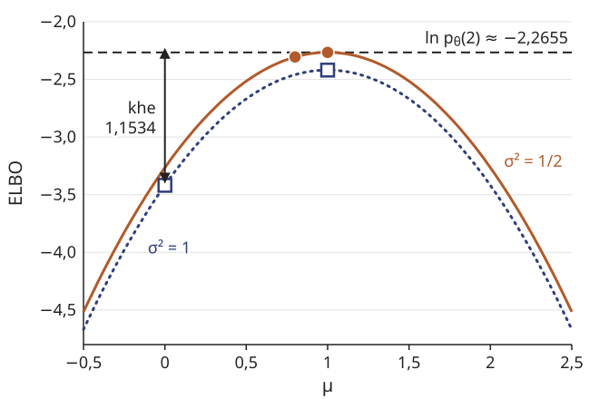

Đối tượng so sánh $\inf_{\theta\in\Theta}L_D(\theta)$; cỡ mẫu là số chuỗi $m$.
Hai thiết lập lấy mẫu cho dữ liệu chuỗi
Ví dụ 09.1. $\Pr(x_3=\mathtt B\mid x_2=\mathtt A)=0{,}7\ne0{,}4=\Pr(x_3=\mathtt B\mid x_2=\mathtt B)$: kí tự phụ thuộc nhau.
Định nghĩa 09.1. Thiết lập A (các chuỗi độc lập): quan sát là cả chuỗi, $S\sim D^m$.
Thiết lập B (chuỗi thời gian, time series): cửa sổ chồng lấn (overlapping windows) $u_j=\big((x_{j-k},\ldots,x_{j-1}),x_j\big)$, $j=k+1,\ldots,n$; độ dài ngữ cảnh (context length) $k$.
Với B, cửa sổ nói chung phụ thuộc nhau: cần thêm giả thiết về sự phụ thuộc.
Hàm lỗi log và giả thiết của bài
Hàm xác suất: $\ell\in[0,\infty]$, $+\infty$ khi $p_\theta(x)=0$; mật độ: $\ell$ có thể âm, trái với (T2).
$\ell$ không bị chặn, trái với (T3).
Với độ dài $n$ cố định, mọi xác suất có điều kiện $\ge c>0$ ($c$ chung cho lớp): $\ell\le n\ln(1/c)$.
Khi đó cận Bài 02, 04, 07 cho hàm lỗi bị chặn áp dụng.
(T7) (Bài 04): tập kiểm tra (test set) $V=(V_1,\ldots,V_{m_v})\sim D^{m_v}$ độc lập với $S$; $\hat\theta=\hat\theta(S)$ không phụ thuộc $V$.
Mô hình xác suất và ước lượng hợp lý cực đại
Mô hình trả về một phân bố thay cho một nhãn.
Định nghĩa 09.2. $p_\theta(x)\ge0$, $\sum_{x\in\mathcal X}p_\theta(x)=1$; độ hợp lý (likelihood) của tập huấn luyện cố định $s=(x^{(1)},\ldots,x^{(m)})$ là $\prod_ip_\theta(x^{(i)})$.
Log độ hợp lý (log-likelihood): lôgarit của độ hợp lý.
Ước lượng hợp lý cực đại (maximum likelihood estimation, MLE): $\hat\theta$ làm lớn nhất độ hợp lý,
$L_s'(\theta)=-0{,}7/\theta+0{,}3/(1-\theta)=0$ tại $\theta=0{,}7$; tổng quát, $\hat\theta=m_1/m$.
$m_1=0$: $\hat\theta=0$, nên $\ell(\hat\theta,1)=+\infty$.
3.Phân tích tự hồi quy và quan sát độc lập ở cấp chuỗi
Hàm lỗi log của một chuỗi là tổng các hàm lỗi theo từng kí tự, nhưng quan sát độc lập vẫn là cả chuỗi.
phân tích tự hồi quy · độ bối rối · cấp chuỗi · rò rỉ thông tin · hàm lỗi chuẩn hóa theo độ dài
Quy tắc nhân xác suất cho chuỗi
Bảng theo chuỗi: $\lvert\mathcal A\rvert^n-1$ tham số.
Kí hiệu: $x_{<j}=x_{1:j-1}$; $p_1(x_j\mid x_{<j})=p_1(x_{1:j})/p_1(x_{<j})$ khi $p_1(x_{<j})>0$.
Trực quan. Thừa số thứ $j$: phân lớp kí tự $j$ theo tiền tố $x_{<j}$.
Mệnh đề 09.3.Giả thiết: $n\ge1$; $p_1$ là hàm xác suất bất kì trên $\mathcal A^n$.
Bảo đảm: tất định, mọi $x_{1:n}$: (a) phân tích tự hồi quy (autoregressive factorization) $p_1(x_{1:n})=\prod_{j=1}^np_1(x_j\mid x_{<j})$, tích $=0$ nếu có $p_1(x_{<j})=0$; (b) $-\ln p_1(x_{1:n})=\sum_{j=1}^n-\ln p_1(x_j\mid x_{<j})$.
(c) Mọi họ $p_\theta(\cdot\mid x_{<j})$ trên $\mathcal A$: $Q_n=\prod_{j=1}^np_\theta(x_j\mid x_{<j})$ là hàm xác suất trên $\mathcal A^n$ có $Q_n(x_j\mid x_{<j})=p_\theta(x_j\mid x_{<j})$ khi $Q_n(x_{<j})>0$.
Ý tưởng chứng minh: quy tắc nhân xác suất cho chuỗi
(định nghĩa xác suất có điều kiện) $p_1(x_{1:j})=p_1(x_{<j})\,p_1(x_j\mid x_{<j})$; nhân từ $j=1$ đến $n$, giản ước: (a).
(tiền tố có xác suất $0$) $p_1(x_{1:n})\le p_1(x_{<j})=0$: hai vế bằng $0$.
Lấy $-\ln$ hai vế, với $-\ln0=+\infty$: (b).
(mỗi hàng có tổng $1$) Lấy tổng theo kí tự cuối, quy nạp từ $j=n$: (c).
Kỹ thuật. Lấy tổng theo kí tự cuối: $\sum_{x_j\in\mathcal A}Q_j(x_{1:j})=Q_{j-1}(x_{<j})$, với $Q_j=\prod_{i\le j}p_\theta(x_i\mid x_{<i})$.
Mô hình tự hồi quy và độ bối rối
Định nghĩa 09.4. Mô hình tự hồi quy: $p_\theta(x_{1:n})=\prod_jp_\theta(x_j\mid x_{<j})$, một hàm xác suất theo Mệnh đề 09.3(c).
Ngữ cảnh bậc $k$ (giả thiết mô hình): chỉ dùng $k$ kí tự cuối; bậc $1$: mô hình bigram (bigram model).
Độ bối rối (perplexity) $\exp\big(\tfrac1n\ell(\theta,x_{1:n})\big)$; $\tfrac1n\ell$: hàm lỗi log trung bình theo kí tự.
Ví dụ 09.3. $\mathtt{ABB}$: $\ell=1{,}7838$, theo kí tự $0{,}5946$, độ bối rối $0{,}168^{-1/3}\approx1{,}8123<2$ (mô hình đều).
Bài tập: độ hợp lý và độ bối rối từ một bảng
Trước
$\mathtt A$
$\mathtt B$
$\mathtt C$
(đầu chuỗi)
$0{,}5$
$0{,}25$
$0{,}25$
$\mathtt A$
$0{,}2$
$0{,}5$
$0{,}3$
$\mathtt B$
$0{,}4$
$0{,}4$
$0{,}2$
$\mathtt C$
$0{,}1$
$0{,}1$
$0{,}8$
Bài tập 09.1. Mô hình bigram $p_\theta$ trên $\{\mathtt A,\mathtt B,\mathtt C\}$ cho bởi bảng.
(a) Với độ dài cố định $n=4$, tính độ hợp lý, hàm lỗi log, hàm lỗi log trung bình theo kí tự và độ bối rối của hai chuỗi $\mathtt{ABBC}$ và $\mathtt{CCCC}$.
(c) Tính $\Pr(x_3=\mathtt C\mid x_1=\mathtt A)$ và $\Pr(x_3=\mathtt C\mid x_1=\mathtt C)$ dưới $p_\theta$. Mô hình có ngữ cảnh bậc $1$; kí tự $x_3$ có độc lập với $x_1$ không?
Bài tập: độ hợp lý và độ bối rối từ một bảng, lời giải
$0{,}40\ne0{,}69$: $x_3$ không độc lập với $x_1$; $x_1$ tác động lên $x_3$ qua $x_2$.
Quan sát độc lập ở cấp chuỗi
Hàm lỗi của chuỗi: tổng $n$ số hạng phụ thuộc nhau; $L_S(\theta)$, $\theta$ cố định: trung bình $m$ biến độc lập.
Định lý 02.7 (Hoeffding) cần số hạng độc lập, bị chặn, nên áp dụng ở cấp chuỗi.
Ví dụ 09.4. DNA trên $\{\mathtt A,\mathtt C,\mathtt G,\mathtt T\}$, $n=200$; bigram $p_\theta$ cố định, không phụ thuộc $V$, mọi xác suất $\ge c=0{,}05$; $m_v=50$, $\delta=0{,}05$.
$\ell\in[0,b]$, $b=200\ln20\approx599{,}15$, $L_V(\theta)=\tfrac1{m_v}\sum_{i=1}^{m_v}\ell(\theta,V_i)$; với xác suất ít nhất $1-\delta$ theo tập kiểm tra,
Nhắc lại: đảo cận đuôi thành bán kính và cỡ mẫu (Bài 02).
Ví dụ 09.4 theo kí tự (chia cho $n$): bán kính $\ln(1/c)\sqrt{\ln(2/\delta)/(2m_v)}$ nat (đơn vị của $\ln$), không giảm khi $n$ tăng.
Đếm
Cỡ mẫu
Bán kính
chuỗi
$m_v=50$
$0{,}5754$
chuỗi
$m_v=6622$
$\le0{,}05$
kí tự (coi độc lập)
$m_vn=10^4$
$0{,}0407$
Bán kính $0{,}0407$ áp dụng Định lý 02.7 cho kí tự phụ thuộc nhau: không có căn cứ.
Ví dụ: rò rỉ thông tin khi chia ngẫu nhiên cửa sổ chồng lấn
Ví dụ 09.5. Thiết lập B: $x_1,\ldots,x_{5000}$ độc lập $N(0,1)$, $k=10$; $998/4990$ cửa sổ kiểm tra; lỗi bình phương (squared loss).
Hàm dự đoán ghi nhớ tra $u_{j+1}$: đích $x_j$ ở cuối ngữ cảnh.

Chung $9$ giá trị ($k=10$).
Chia ngẫu nhiên: lỗi bình phương trung bình (mean squared error, MSE) $\approx0{,}8\cdot0+0{,}2\cdot1<\operatorname{Var}(x_j)=1$: rò rỉ thông tin (leakage).
Chia theo thời gian: $0{,}994$; cửa sổ kiểm tra vẫn phụ thuộc nhau.
Hàm lỗi tổng và hàm lỗi chuẩn hóa theo độ dài
Độ dài thay đổi: kí tự kết thúc (end-of-sequence token) $\mathtt E$ (Nhận xét 09.5).
Định nghĩa 09.6. Hàm lỗi tổng (total sequence loss) $\ell(\theta,x)=\sum_{j=1}^{n(x)+1}-\ln p_\theta(x_j\mid x_{<j})$, $x_{n(x)+1}=\mathtt E$; hàm lỗi chuẩn hóa theo độ dài (length-normalized loss) $\ell_{\mathrm{len}}=\ell/n(x)$.
Ví dụ 09.6. $D(\mathtt{11})=D(\mathtt{0000000000})=\tfrac12$; kí tự độc lập, $\Pr(\mathtt 1)=\theta$.
Tổng: $-\ln\theta-5\ln(1-\theta)$, cực tiểu $\tfrac16$, tần suất của $\mathtt 1$ trên mọi kí tự.
Chuẩn hóa: $-\tfrac12\ln\theta-\tfrac12\ln(1-\theta)$, cực tiểu $\tfrac12$; kí tự chuỗi ngắn nặng $\tfrac14$, chuỗi dài $\tfrac1{20}$.
4.Entropy và phân kì Kullback–Leibler
Với hàm lỗi log, rủi ro kì vọng bằng một số chỉ phụ thuộc phân bố thật cộng một độ lệch không âm.
entropy · phân kì Kullback–Leibler · đặc tả đúng · quá khớp · làm trơn cộng một
Entropy, entropy chéo và phân kì Kullback–Leibler
Rủi ro kì vọng phụ thuộc phân bố thật chưa biết.
Định nghĩa 09.7. Entropy $\mathrm H(p_1)=-\sum_xp_1(x)\ln p_1(x)\in[0,\infty]$; entropy chéo (cross-entropy) $\mathbb E_{X\sim p_1}[-\ln p_2(X)]$, bằng $L_D(\theta)$ khi $p_1=p_D$ (hàm xác suất của $D$), $p_2=p_\theta$.
Phân kì Kullback–Leibler (Kullback–Leibler divergence, KL): $\mathrm{KL}(p_1\Vert p_2)=\sum_{x:\,p_1(x)>0}p_1(x)\ln\frac{p_1(x)}{p_2(x)}$, tổng trên giá (support) của $p_1$.
Mật độ: entropy vi phân (differential entropy) $\mathrm h(p_1)=-\int p_1\ln p_1$.
Không đối xứng: $\mathrm{KL}(\mathrm{Ber}(0{,}6)\Vert\mathrm{Ber}(0{,}7))\approx0{,}0226$, chiều ngược $\approx0{,}0216$.
Rủi ro bằng entropy cộng phân kì Kullback–Leibler
Trực quan. Xác suất nhỏ ở điểm hay xảy ra: hàm lỗi lớn; bỏ sót điểm của giá: rủi ro $+\infty$.
Mệnh đề 09.8.Giả thiết: $\mathcal X$ đếm được; $\mathrm H(p_D)<\infty$; $p_\theta$ là hàm xác suất, $\theta$ cố định.
Bảo đảm: tổng thể, kì vọng theo $D$: (a) $L_D(\theta)=\mathrm H(p_D)+\mathrm{KL}(p_D\Vert p_\theta)$ trong $[0,\infty]$.
(b) $\mathrm{KL}(p_D\Vert p_\theta)\ge0$, dấu bằng khi và chỉ khi $p_\theta=p_D$; nên $L_D(\theta)\ge\mathrm H(p_D)$.
(c) Mật độ, $\int p_D\lvert\ln p_D\rvert,\int p_D\lvert\ln p_\theta\rvert<\infty$: $L_D=\mathrm h(p_D)+\mathrm{KL}$, $\mathrm{KL}\ge0$, $=0$ khi và chỉ khi $p_\theta=p_D$ hầu khắp nơi.
Ý tưởng chứng minh: rủi ro bằng entropy cộng phân kì Kullback–Leibler
($p_\theta(x_0)=0<p_D(x_0)$) $L_D=+\infty$; số hạng $x_0$ của KL bằng $+\infty$, phần âm có tổng hữu hạn.
Trên giá, $-\ln p_\theta=-\ln p_D+\ln(p_D/p_\theta)$; nhân $p_D$, lấy tổng; không tổng nào bằng $-\infty$, nên cộng được: (a).
Dấu bằng: $t=1$ trên giá và $p_\theta=0$ ngoài giá; vế sau của (b) dùng $\mathrm H(p_D)<\infty$; (c): tích phân thay tổng.
Kỹ thuật. $\ln t\le t-1$ với $t>0$, dấu bằng chỉ khi $t=1$; cho $\mathrm{KL}\ge0$.
Ước lượng hợp lý cực đại tổng thể và phân kì KL thuận
Hệ quả 09.9.Giả thiết: $D$ như Mệnh đề 09.8; mọi $p_\theta$, $\theta\in\Theta$, là hàm xác suất.
Bảo đảm: tổng thể. (a) Với $L_D(\theta),L_D(\theta')<\infty$: $L_D(\theta)-L_D(\theta')=\mathrm{KL}(p_D\Vert p_\theta)-\mathrm{KL}(p_D\Vert p_{\theta'})$.
$L_D$ và KL thuận (forward KL) có cùng điểm cực tiểu; $\inf_\Theta L_D=\mathrm H(p_D)+\inf_\Theta\mathrm{KL}(p_D\Vert p_\theta)$.
(b) Đặc tả đúng (well-specified), $p_D=p_{\theta^\star}$: $\theta^\star$ làm nhỏ nhất $L_D$; mọi điểm cực tiểu có $p_\theta=p_D$.
Chứng minh. Trừ hai đẳng thức của Mệnh đề 09.8(a).
Rủi ro thực nghiệm và entropy của phân bố thật
Câu hỏi: mô hình có rủi ro thực nghiệm nhỏ hơn $\mathrm H(p_D)$ có tốt hơn phân bố thật không?
$D=\mathrm{Ber}(0{,}6)$; tập huấn luyện của Ví dụ 09.2, $\hat\theta=0{,}7$.
Đại lượng
Giá trị
$L_s(0{,}7)$
$0{,}6109$
$\mathrm H(p_D)$
$0{,}6730$
$L_D(0{,}7)=\mathrm H(p_D)+\mathrm{KL}$
$0{,}6730+0{,}0226=0{,}6956$
Không: rủi ro thực nghiệm xuống dưới $\mathrm H(p_D)$, rủi ro kì vọng thì không (Mệnh đề 09.8(b)).
Khoảng cách tổng quát hóa (generalization gap) $L_D(0{,}7)-L_s(0{,}7)=0{,}0847$.
Ví dụ: rủi ro kì vọng vô hạn của ước lượng hợp lý cực đại
Tập huấn luyện toàn số $0$ có xác suất $0{,}99^m$: $0{,}9044$; $0{,}6050$; $0{,}3660$ với $m=10$; $50$; $100$.
Trên biến cố đó, $\hat\theta=0$ và $L_D(\hat\theta)=0{,}01\cdot(-\ln0)=+\infty$; nên $\mathbb E_SL_D(\hat\theta)=+\infty$ với mọi $m$.
Làm trơn cộng một (add-one smoothing): $\hat\theta=(1+m_1)/(m+2)$, nên $\ell(\hat\theta,x)\le\ln(m+2)$.
$m=50$, $m_1=0$: $\hat\theta=\tfrac1{52}$, $L_D(\hat\theta)\approx0{,}0587$, gần $\mathrm H(p_D)\approx0{,}0560$.
Ví dụ: mô hình bigram trên chuỗi DNA tổng hợp
Ví dụ 09.8. Xích Markov (Markov chain): kí tự đầu đều; xác suất giữ nguyên kí tự $0{,}6$, ba kí tự còn lại $0{,}2$; $0{,}1$; $0{,}1$; $n=200$; $200$ chuỗi kiểm tra; trung bình $10$ lần chạy.
$m$
MLE
Làm trơn
Mô hình thật
$1$
$+\infty$
$1{,}122$
$1{,}091$
$5$
$+\infty$
$1{,}097$
$1{,}090$
$50$
$1{,}091$
$1{,}091$
$1{,}091$
$500$
$1{,}088$
$1{,}088$
$1{,}088$
Tốt nhất: $\mathrm H(p_D)/200\approx1{,}0904$.
$m=1$: rủi ro thực nghiệm $1{,}070$, lỗi kiểm tra $+\infty$: quá khớp (overfitting).
$m=50$: cách tốt nhất $\approx0{,}0009$.
$m=500$: mô hình thật cũng $1{,}088$: dao động của tập kiểm tra.
Bài tập: entropy chéo, entropy và phân kì KL
Bài tập 09.3. $\mathcal X=\{1,2,3\}$, $p_D=(\tfrac12,\tfrac14,\tfrac14)$. (c) Với $p_\theta=(\tfrac12,\tfrac12,0)$, tính $L_D(\theta)$, $\mathrm{KL}(p_D\Vert p_\theta)$ và $\mathrm{KL}(p_\theta\Vert p_D)$.
Ước lượng hợp lý cực đại tổng thể làm nhỏ nhất chiều nào (Hệ quả 09.9)?
Với chiều đó, một mô hình gán xác suất $0$ cho một quan sát có thể xảy ra bị đánh giá thế nào?
Lời giải: $p_D(3)=\tfrac14>0=p_\theta(3)$, nên $L_D(\theta)=\mathrm{KL}(p_D\Vert p_\theta)=+\infty$; $\mathrm{KL}(p_\theta\Vert p_D)=\tfrac12\ln2\approx0{,}3466$.
Chiều thuận $\mathrm{KL}(p_D\Vert p_\theta)$; với chiều này, mô hình đó có rủi ro $+\infty$.
5.Mô hình biến ẩn và cận dưới bằng chứng
Khi có biến không quan sát được, log độ hợp lý bị chặn dưới bởi một đại lượng ước lượng được bằng rút mẫu.
biến ẩn · hậu nghiệm · cận dưới bằng chứng · khe · thuật toán EM
Mô hình biến ẩn
Độ hợp lý của mô hình có biến không quan sát được là một tích phân, nói chung không tính được.
Định nghĩa 09.10. Biến ẩn (latent variable) $v\in\mathcal V$; $p_\theta(x,v)=p_\theta(v)\,p_\theta(x\mid v)$: tiên nghiệm (prior) nhân mô hình quan sát.
Định nghĩa 09.11. Cận dưới bằng chứng (evidence lower bound, ELBO): $\operatorname{ELBO}(\theta,\phi;x)=\mathbb E_{v\sim q_\phi(\cdot\mid x)}\ln\big(p_\theta(x,v)/q_\phi(v\mid x)\big)$.
Trực quan. $\ln p_\theta(x)$ không phụ thuộc $q$: tăng ELBO theo $q$ thu hẹp hiệu $\ln p_\theta(x)-\operatorname{ELBO}$.
Định lý 09.12.Giả thiết: $q=q_\phi(\cdot\mid x)$; $0<p_\theta(x)<\infty$; $p_\theta(x,v)>0$ cho $q$-hầu hết $v$; $\ln p_\theta(x,v)$, $\ln q$ khả tích.
Bảo đảm: tất định: (a) $\ln p_\theta(x)=\operatorname{ELBO}+\mathrm{KL}(q\Vert p_\theta(\cdot\mid x))$; (b) $\operatorname{ELBO}\le\ln p_\theta(x)$, dấu bằng khi và chỉ khi $q=p_\theta(\cdot\mid x)$ hầu khắp nơi.
Ý tưởng chứng minh: đồng nhất thức của cận dưới bằng chứng
($0<p_\theta(x)<\infty$) Bayes với $p_\theta(x,v)>0$: $\ln p_\theta(x)=\ln p_\theta(x,v)-\ln p_\theta(v\mid x)$.
(giả thiết về $q$) Thêm bớt $\ln q(v)$, với $q$-hầu hết $v$: $\ln p_\theta(x)=\big[\ln p_\theta(x,v)-\ln q(v)\big]+\big[\ln q(v)-\ln p_\theta(v\mid x)\big]$.
(khả tích) Lấy $\mathbb E_q$: ngoặc đầu cho ELBO, ngoặc sau cho $\mathrm{KL}(q\Vert p_\theta(\cdot\mid x))$: (a).
Nhắc lại: $\ln t\le t-1$ cho $\mathrm{KL}\ge0$ (lập luận của Mệnh đề 09.8(b), (c)): (b). Tách $\ln p_\theta(x,v)=\ln p_\theta(x\mid v)+\ln p_\theta(v)$: (c).
Kỹ thuật. Thêm bớt $\ln q(v)$ rồi lấy kì vọng theo $q$, phân bố do ta chọn.
Ví dụ: số hạng tái tạo, phân kì KL và khe của cận
Ví dụ 09.10. Ví dụ 09.9 tại $x=2$; $q_\phi=N(\mu,\sigma^2)$, $\phi=(\mu,\sigma)$; ELBO bằng số hạng tái tạo trừ KL tới tiên nghiệm (Định lý 09.12(c)).
Khe (gap) $\ln p_\theta(2)-\operatorname{ELBO}=\mathrm{KL}(q_\phi\Vert N(1,\tfrac12))$ (Định lý 09.12(a)), bằng $0$ tại hậu nghiệm $\mu=1$, $\sigma^2=\tfrac12$.
$\mu;\sigma^2$
Tái tạo
KL tiên nghiệm
ELBO
Khe
$0;1$
$-3{,}4189$
$0$
$-3{,}4189$
$1{,}1534$
$1;1$
$-1{,}9189$
$0{,}5$
$-2{,}4189$
$0{,}1534$
$0{,}8;0{,}5$
$-1{,}8889$
$0{,}4166$
$-2{,}3055$
$0{,}0400$
$1;0{,}5$
$-1{,}6689$
$0{,}5966$
$-2{,}2655$
$0$

ELBO theo $\mu$, $\sigma^2\in\{\tfrac12,1\}$; đường ngang $\ln p_\theta(2)$.
Thuật toán EM không làm giảm log độ hợp lý
Thuật toán EM (Expectation–Maximization), $\mathcal V$ hữu hạn: cực đại hóa $\operatorname{ELBO}(\theta,q;x)$, với $q$ là hàm xác suất, luân phiên theo $q$, $\theta$.
Bài tập 09.4. (b) $v$ đều trên $\{1,2\}$; $x\mid v=1\sim N(-1,1)$, $x\mid v=2\sim N(1,1)$; $x=0{,}5$.
Tính $p_\theta(x)$, $\Pr(v=2\mid x)$; ELBO và khe với $q(2)=0{,}5$ và $q(2)=0{,}9$; với $q(2)=0{,}9$, kiểm khe bằng KL tới hậu nghiệm và Định lý 09.12(c).
$q(2)=0{,}9$: KL tới hậu nghiệm $0{,}0882$; số hạng tái tạo $-1{,}1439$ trừ KL tới tiên nghiệm $0{,}3681$ bằng $-1{,}5120$.
$q(2)$
ELBO
Khe
$0{,}5$
$-1{,}5439$
$0{,}1201$
$0{,}9$
$-1{,}5120$
$0{,}0882$
6.Tái tham số hóa và so sánh các mô hình sinh
Tái tham số hóa cho gradient không chệch khi hàm khả vi liên tục, khả tích và có gradient bị chặn bởi hàm khả tích.
tái tham số hóa · gradient theo đường đi · gradient log · hàm trội · dữ liệu sinh ra
Tái tham số hóa và hai ước lượng gradient
Cực đại hóa ELBO bằng hạ gradient ngẫu nhiên (stochastic gradient descent, SGD) cần $\nabla F$, $F(\phi)=\mathbb E_{v\sim q_\phi}f(v)$.
Phân bố phụ thuộc $\phi$: nói chung $\nabla F\ne\mathbb E_{v\sim q_\phi}\nabla_\phi f(v)=0$.
Định nghĩa 09.14. Nhiễu phụ (auxiliary noise) $\zeta$: phân bố không phụ thuộc $\phi$; tái tham số hóa (reparameterization): $g_\phi(\zeta)$ có phân bố $q_\phi$.
Ước lượng gradient theo đường đi (pathwise gradient estimator): $\nabla_\phi\big[f(g_\phi(\zeta))\big]$.
Ước lượng gradient log (score-function estimator): $f(v)\,\nabla_\phi\ln q_\phi(v)$, $v\sim q_\phi$.
Trực quan. $F(\phi)=\mathbb E_\zeta f(g_\phi(\zeta))$: $\phi$ chỉ nằm trong $f(g_\phi(\zeta))$.
Gradient theo đường đi không chệch
Mệnh đề 09.15.Giả thiết: $\zeta$ là nhiễu phụ; $\Phi$ mở; $\kappa(\phi,\zeta)$ đo được, chẳng hạn $f(g_\phi(\zeta))$.
(i) Có $N_0$ xác suất $0$, không phụ thuộc $\phi$: với $\zeta\notin N_0$, $\kappa(\cdot,\zeta)$ khả vi liên tục trên $\Phi$.
(ii) Hàm trội (dominating function): mỗi $\phi_0$ có lân cận $U$ và $M\ge0$, $\mathbb EM(\zeta)<\infty$, với $\lVert\nabla_\phi\kappa(\phi,\zeta)\rVert\le M(\zeta)$ khi $\phi\in U$, $\zeta\notin N_0$.
(iii) $\mathbb E\lvert\kappa(\phi,\zeta)\rvert<\infty$ với mọi $\phi\in\Phi$.
Bảo đảm: kì vọng theo $\zeta$, tất định theo $\phi$: $F(\phi)=\mathbb E\kappa(\phi,\zeta)$ khả vi, $\nabla F(\phi)=\mathbb E\nabla_\phi\kappa(\phi,\zeta)$; một lần rút cho ước lượng không chệch.
Ý tưởng chứng minh: gradient theo đường đi không chệch
(dùng (i)) Giá trị trung bình (mean value theorem) trên $[\phi_0,\phi_0+\Delta e]$, $\zeta\notin N_0$: thương sai phân $\big(\kappa(\phi_0+\Delta e,\zeta)-\kappa(\phi_0,\zeta)\big)/\Delta$ bằng một đạo hàm theo hướng.
(dùng (ii)) Thương sai phân bị chặn bởi $M(\zeta)$, khả tích.
(dùng (iii)) $F$ hữu hạn; hội tụ bị chặn (dominated convergence theorem) khi $\Delta\to0$: $\partial_eF(\phi_0)=\mathbb E\langle\nabla_\phi\kappa(\phi_0,\zeta),e\rangle$.
Hội tụ bị chặn: đạo hàm riêng liên tục, $F$ khả vi.
Lưu ý: (i) cần $N_0$ chung cho mọi $\phi$.
Đổi chỗ đạo hàm và kì vọng
Kỹ thuật. Với $\zeta$ có phân bố không phụ thuộc $\phi$: $\nabla_\phi\mathbb E\kappa(\phi,\zeta)=\mathbb E\nabla_\phi\kappa(\phi,\zeta)$ (differentiation under the integral sign) khi:
(i) $\kappa(\cdot,\zeta)$ khả vi liên tục với mọi $\zeta\notin N_0$, $N_0$ chung, xác suất $0$;
(ii) gradient bị chặn bởi một hàm trội khả tích (định lý hội tụ bị chặn); (iii) $\mathbb E\lvert\kappa\rvert<\infty$.
Dùng khi cần gradient không chệch của một kì vọng (Mệnh đề 09.15).
Ví dụ: gradient theo đường đi trong mô hình Gauss
Ví dụ 09.11. Ví dụ 09.10, $x=2$; chỉ rút mẫu số hạng tái tạo:
Mệnh đề 09.8(c) và $p_{\theta_3}\ge0{,}01\,p_{\theta_1}$: $1{,}4189\le L_D(\theta_3)/p\le1{,}4249$.
$99\%$ điểm rút từ $p_{\theta_3}$ là nhiễu từ $p_{\theta_2}$.
Mô hình ghi nhớ (memorizing model) trên $50$ chuỗi của Ví dụ 09.8: sinh chuỗi thật; chuỗi mới có hàm lỗi $+\infty$ với xác suất $\ge1-8{,}9\cdot10^{-44}$.
Bài tập 09.7. $\theta$ cố định, một quan sát $x=2$; $F=-\operatorname{ELBO}$ (Ví dụ 09.10), $W=[0,2]\times[\tfrac12,1]$, $w_1=(0,1)$, $\varphi=-\nabla_{\mu,\sigma}\kappa$; (C) cho thác triển lồi của $F$; (G1) thỏa.
(c) Tính $\max_W\mathbb E\lVert\varphi(w,\zeta)\rVert^2$, $G$. (d) $T=10^4$: tính $R$, $\eta$, cận; $\mathbb EF(\bar w_T)-\min_\Phi F$ là kì vọng của KL nào?
Lời giải: $\max_W\mathbb E\lVert\varphi\rVert^2=12$, $G=2\sqrt3$, $R=\sqrt{4{,}25}$, $\eta\approx0{,}00595$; $\mathbb E\,\mathrm{KL}(q_{\bar w_T}\Vert p_\theta(\cdot\mid2))\le0{,}0715$: độ chênh tối ưu, không phải $L_D$.
Theo $(\theta,\phi)$, $-\operatorname{ELBO}$ nói chung không lồi.
7.Tổng kết
Mỗi kết quả của bài thuộc một loại bảo đảm: tất định, tổng thể hoặc kì vọng theo nhiễu phụ.
Bảng tổng kết
Kết quả
Giả thiết không được bỏ
Ý tưởng chứng minh
Mệnh đề 09.3, tất định: $p_1(x_{1:n})=\prod_jp_1(x_j\mid x_{<j})$
(c): hàng tổng $1$
giản ước; tổng theo kí tự cuối
Mệnh đề 09.8, Hệ quả 09.9, tổng thể: $L_D=\mathrm H(p_D)+\mathrm{KL}(p_D\Vert p_\theta)$
$\mathcal X$ đếm được; $p_\theta$ tổng $1$; $\mathrm H(p_D)<\infty$
$\ln t\le t-1$; trừ hai đẳng thức
Định lý 09.12, tất định: $\ln p_\theta(x)=\operatorname{ELBO}+\mathrm{KL}(q\Vert p_\theta(\cdot\mid x))$; Hệ quả 09.13: $L_s(\theta_{t+1})\le L_s(\theta_t)$
$p_\theta(x)\in(0,\infty)$; $p_\theta(x,v)>0$ trên giá $q$; khả tích; EM: $\mathcal V$ và bước M hữu hạn
thêm bớt $\ln q$; kẹp hai ELBO
Mệnh đề 09.15, kì vọng theo $\zeta$: $\nabla F=\mathbb E\nabla_\phi\kappa$
(i) $N_0$ chung; (ii) hàm trội; (iii) khả tích
hội tụ bị chặn
Vấn đề trung tâm
Phân bố: ERM với hàm lỗi log; $L_D=\mathrm H(p_D)+\mathrm{KL}(p_D\Vert p_\theta)$ khi $\mathrm H(p_D)<\infty$.
Chuỗi: hàm lỗi là tổng theo kí tự; cỡ mẫu là số chuỗi.
Chuỗi thời gian: cần thêm giả thiết về sự phụ thuộc.
Biến ẩn: cực đại hóa ELBO, khe $=\mathrm{KL}$ tới hậu nghiệm; gradient theo đường đi không chệch dưới (i)–(iii).
Bài tập: phạm vi kết luận của lỗi kiểm tra theo kí tự
Bài tập 09.6. Ví dụ 09.8: $n=200$, $200$ chuỗi kiểm tra. Mô hình làm trơn học với $m=50$: mọi xác suất $\ge0{,}087$; độ lệch chuẩn qua mười hạt giống (random seed) $0{,}0041$.
(b)(i) Với $\delta=0{,}05$, tính bán kính tin cậy Hoeffding cho lỗi kiểm tra của mô hình này theo cách của Ví dụ 09.4. Cỡ mẫu trong cận là bao nhiêu? So bán kính với độ lệch chuẩn.
(ii) Nêu kết luận các số trên cho phép và không cho phép.
Bài tập: phạm vi kết luận của lỗi kiểm tra theo kí tự, lời giải
Lời giải: (i) mô hình cố định với tập kiểm tra; cỡ mẫu $m_v=200$ chuỗi, không phải $40\,000$ kí tự:
Shalev-Shwartz và Ben-David (2014), Understanding Machine Learning: From Theory to Algorithms (UML). Trước buổi học: §24.1, §24.1.2, §24.1.3. Sau buổi học: §24.4, §24.4.1.
Kingma và Welling (2014), Auto-Encoding Variational Bayes, ICLR. Sau buổi học: §2.1–2.4, §3, Phụ lục B.